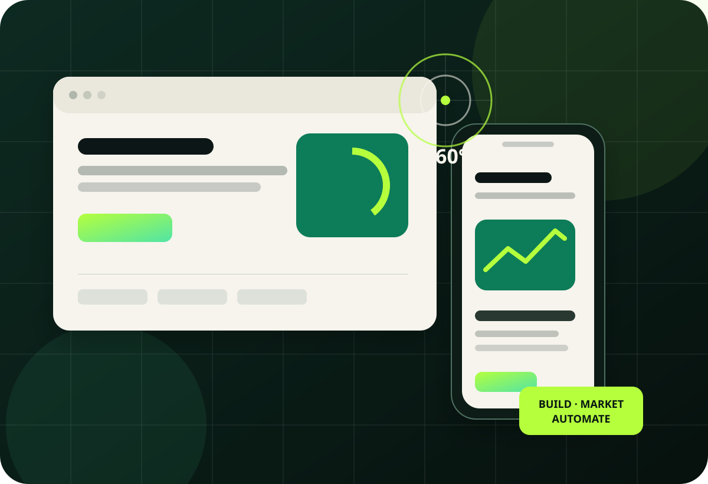
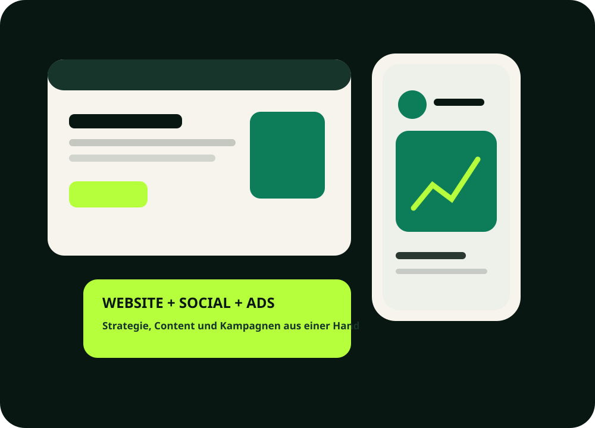
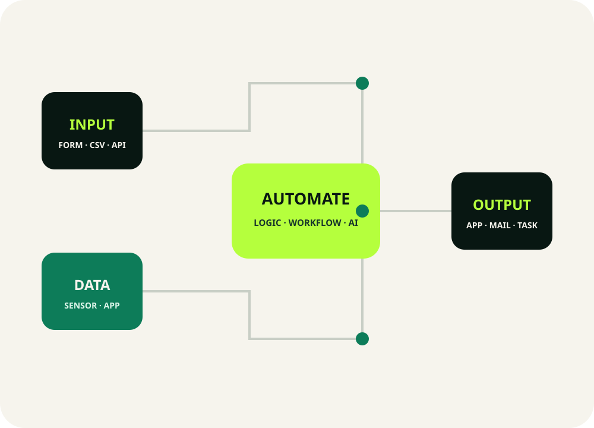
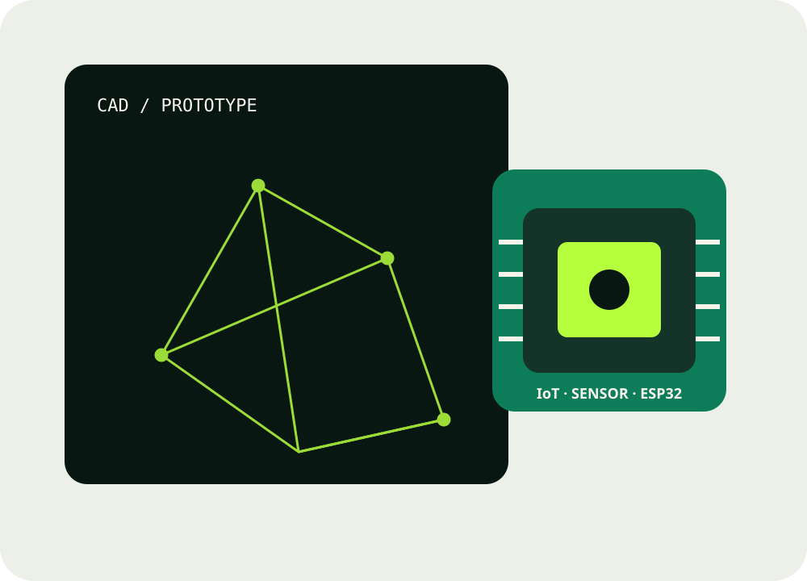

Wir machen Ideen sichtbar. digital. wirksam.
Von der Unternehmenswebsite über Social Media und Onlinewerbung bis zu individuellen Web-Apps, 360°-Rundgängen, Automatisierung und technischen Prototypen: SurroundSights Development verbindet kreative Umsetzung mit technischem Verständnis.

Eine Website allein reicht oft nicht. Wir verbinden Webdesign, Content, Werbung, Software und Technik zu Lösungen, die im Alltag funktionieren und mit Ihrem Unternehmen wachsen.
Für kleine Unternehmen, lokale Betriebe und individuelle technische Projekte – von der ersten Idee bis zur Veröffentlichung und laufenden Betreuung.
Leistungen ohne Agentur-Umwege.
Ein Ansprechpartner für digitale Präsenz, Kampagnen, Software und technische Umsetzung. Leistungen können einzeln gebucht oder sinnvoll kombiniert werden.
Unternehmenswebsite
Responsive Website, Inhalte, Kontakt, grundlegendes SEO, Veröffentlichung sowie optionale Pflege.
ab 1.690 € →Social Media Betreuung
Instagram & Facebook mit Bildbeiträgen, Story-Motiven, Texten, Veröffentlichung und Monatsauswertung.
ab 449 €/Monat →Meta & Google Ads
Lokale Kampagnen, Zielgruppen, Keywords, Anzeigenvarianten, Kontrolle, Optimierung und Reporting.
ab 199 €/Monat →Web-Apps & Dashboards
Individuelle Tools, PWAs, Benutzeroberflächen, Datenmodelle und praxisnahe Business-Anwendungen.
Mehr erfahren →Automation & Integrationen
Workflows, APIs, Datenimporte, Kalender-/E-Mail-Integration und automatisierte Abläufe.
Mehr erfahren →360° & Visualisierung
360°-Aufnahmen, virtuelle Rundgänge, Hotspots, digitale Objektpräsentation und Website-Integration.
Mehr erfahren →CAD, 3D & Prototyping
Konstruktion, 3D-Modelle, Druckvorbereitung, Prototypen, technische Zeichnungen und Fertigung.
Mehr erfahren →IoT, Sensorik & ESP32
Sensorlösungen, Mikrocontroller, Prototyp-Aufbau, Firmware, Messdaten und technische Dokumentation.
Mehr erfahren →Kamera- & Systemplanung
Sichtfelder, Grundrisse, Komponenten, Verkabelung, PoE und technische Inbetriebnahme.
Mehr erfahren →Eine digitale Präsenz, die zusammenpasst.
Website, Social Media und Werbekampagnen werden nicht als drei getrennte Baustellen behandelt. Gestaltung, Botschaft und Zielgruppe greifen ineinander.
- Unternehmenswebsite bis zu fünf Inhaltsseiten
- Instagram & Facebook – Einrichtung und laufender Content
- Meta Ads für lokale Reichweite und Anfragen
- Google Ads für gezielte Suchanfragen
- Websitepflege und monatliche Kampagnenoptimierung

Wenn Standardsoftware nicht zum Prozess passt.
Wir entwickeln kleine bis mittlere Web-Tools, Dashboards und Automatisierungen für konkrete Abläufe – von Datenerfassung und Planung bis zu Schnittstellen und Auswertung.

Digital zeigen. Technisch lösen.
Virtuelle Rundgänge für Räume und Unternehmen treffen auf CAD, 3D-Druck, Sensorik und technische Systemplanung.
- 360°-Aufnahme & virtueller Rundgang
- CAD-Konstruktion & 3D-Prototypen
- ESP32, Sensorik & Firmware
- Kamera-, Sichtfeld- und Verkabelungsplanung
- Inbetriebnahme & technische Dokumentation

Von der Idee bis zum Betrieb.
Klare Abstimmung, eine nachvollziehbare Leistung und möglichst wenig Reibungsverluste. Sie behalten Ihre Konten, Zugänge und Daten.
Ziele & Anforderungen
Wir klären Zielgruppe, technische Anforderungen, vorhandene Systeme und Prioritäten.
Struktur & Angebot
Leistungsumfang, Zeitplan, Budget und Zuständigkeiten werden transparent festgelegt.
Design & Entwicklung
Die Lösung wird erstellt, getestet und in einer gebündelten Korrekturphase abgestimmt.
Launch & Betreuung
Veröffentlichung, Übergabe sowie auf Wunsch laufende Pflege, Content und Kampagnen.
Was möchten Sie sichtbar machen?
Schildern Sie kurz Ihr Vorhaben. Sie erhalten eine klare Rückmeldung, welche Lösung sinnvoll ist und welche nächsten Schritte nötig sind.